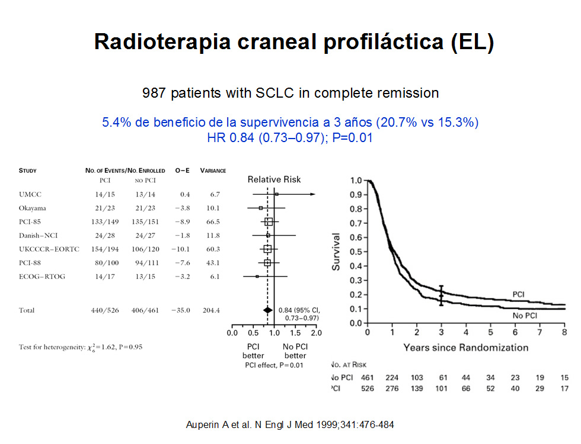

MÓDULO 6 : Cáncer microcítico de pulmón

6.6 Enfermedad localizada
Tratamiento de la enfermedad localizada (Estadios I-III subsidiarios de tratamiento radical)
Los pacientes con CMP con enfermedad localizada presentan una mediana de SG de aproximadamente 15-20 m (y de 6 m sin tratamiento). La SG 2 a: 40 %; SG 5 a: 20%.
El tratamiento con quimioterapia basada en cisplatino junto con la radioterapia torácica (mejor concurrente e hiperfraccionada), seguida de la radioterapia holocraneal profiláctica, se considera hoy día el tratamiento estándar en pacientes no ancianos y con buen estado general con CMP con enfermedad localizada.
En la siguiente gráfica podemos ver la evolución del tratamiento del CMP:
La quimioterapia basada en platino representa el pilar del tratamiento del CMP. En un meta-análisis de 19 estudios y 4504 pacientes se apreció que las combinaciones que contenían cisplatino conseguían un incremento del 4.4% de supervivencia a 1 año y con un beneficio en respuestas respecto los regímenes que no incluían cisplatino.
Un estudio de la Cochrane con 5530 pacientes de 29 estudios aleatorizados que compara quimioterapia con o sin platino, de nuevo encuentra diferencias favorables en respuesta para los esquemas con platino (odds ratio 1.26), en respuestas completas (odds ratio 1.39) y también en supervivencia, que sólo es significativa a los 6 meses (odds ratio 1.19). Pero no fue estadísticamente significativa para la supervivencia al año ni a los 2 años.
La toxicidad en forma de náuseas-vómitos, anemia y trombopenia fue más frecuente en los esquemas con cisplatino y la neutropenia para los regímenes sin platino.
No hubo diferencias en cuanto a las muertes tóxicas. Sólo 3 estudios incluidos valoraron la calidad de vida por lo que no se introdujo en el meta-análisis.
El esquema de cisplatino/etopósido es el más utilizado desde los años 80. Esta combinación se desarrolló a partir de los hallazgos de sinergia preclínica y posteriormente se vio su superioridad en eficacia y toxicidad respecto a regímenes basados en agentes alquilantes y antraciclinas.
Cisplatino/etopósido se considera actualmente el régimen de elección después que, en la década de los noventa, 3 estudios comparasen este régimen con un esquema de ciclofosfamida/vincristina/antraciclina mostrando menor mielosupresión con cisplatino/etopósido, y menor esofagitis y neumonitis intersticial cuando se administraba concomitantemente con radioterapia con mejor supervivencia media y a los 5 años.
¿Quimioterapia o Quimio-radioterapia para el CMP localizado?
El CMP responde a la quimioterapia (QT) pero existen casi un 80% de recaídas locales, de ahí la necesidad de valorar la eficacia de la radioterapia (RT) torácica, al demostrarse también una alta radiosensibilidad de este tumor en estudios de líneas celulares.
Existen varios ensayos para optimizar el momento y el fraccionamiento de la radioterapia torácica.
Dos meta-análisis de 13 ensayos prospectivos randomizados publicados en los años 90 compararon la quimioterapia sola frente a la combinación de quimioterapia y radioterapia torácica. Estos demostraron beneficio al añadir radioterapia torácica a la quimioterapia en pacientes con enfermedad limitada, con un beneficio en supervivencia a los 3 años del 5.4% y con una reducción en fallo loco-regional del 25%.
Aun así, la terapia combinada no consigue evitar que las recurrencias locales sean del 30-60%.
El tratamiento con radioterapia dependerá de:
El estado general del paciente.
Comorbilidad.
Edad.
Funcionalismo pulmonar.
La administración de la RT de forma precoz puede reducir el riesgo de aparición de células tumorales quimio- resistentes que serían las responsables del fallo del tratamiento.
Dos meta-análisis concluyeron que la RT debe iniciarse lo antes posible, preferiblemente con el primer o segundo ciclo de QT.
En el meta-análisis de Ruysscher, la radioterapia administrada antes de 30 días del inicio de la quimioterapia (en muchos tumores sólidos las clonas de células radioresistentes aparecen a partir de los 30 días de haber iniciado un tratamiento citostático), cuando se administraba conjuntamente con cisplatino, obtenía un beneficio en supervivencia a los 5 años (20.2 al 13.8%, HR 0.62, p=0.02), siendo mayor la diferencia cuanto más corto era el tiempo entre el inicio de la quimioterapia y el inicio de la radioterapia a costa de un aumento de la leucopenia y esofagitis.
Momento de la radioterapia torácica:
Supervivencia a 5 años en función del inicio de la quimioterapia hasta el final de la radioterapia (SER)
Dosis de radioterapia
Fraccionamiento convencional o hiperfraccionada:
El CMP se considera una enfermedad radiosensible, pero los esquemas a bajas dosis provocan un elevado número de recaídas locales. Parece que la dosis óptima con RT convencional administrada una vez al día es de 60 Gy.
Respecto al mejor fraccionamiento, solo hay un estudio fase III de 471 pac (Turrisi et al.) en el que se observó un beneficio en la supervivencia al utilizar RT acelerada o hiperfraccionamiento (1.5 Gy 2 veces/día, dosis total 45 Gy en 30 fracciones) con respecto al fraccionamiento estándar (1.8 Gy1 vez/día, 60 Gy en 25 fracciones). En este estudio se administraba la RT con el primer ciclo de PE. El principal problema fue el incremento significativo de la tasa de esofagitis G3.
Sin embargo, dos estudios similares en los que se comparaba RT hiperfraccionada con RT convencional administrada en el cuarto ciclo no mostraron diferencias significativas, lo que podría hacer pensar que el beneficio de la RT hiperfraccionada se obtendría solo cuando se administra precozmente.
La recomendación actual es realizar la irradiación de forma precoz y concurrente con la QT, si bien todavía son necesarios más estudios fase III para conocer cuál es el mejor esquema de fraccionamiento y otros aspectos para la integración optima de la QT y la RT torácica.
En pacientes con buen estado general y sin comorbilidad limitante con CMP en estadios T1-4, N0-3, M0, se recomienda la RT concurrente precoz, si es posible hiperfraccionada, con QT basada en cisplatino-etopósido (CDDP/VP16) (4 ciclos).
Cuando el estado general del paciente no permita la administración de RT concurrente inicial, se puede posponer la RT hasta el inicio del tercer ciclo de QT.
En resumen, los pacientes con enfermedad localizada deben tratarse con 4-6 ciclos de cisplatino/etopósido y RT torácica concurrente con administración precoz, con el primer o segundo ciclo, con un fraccionamiento de 45 Gy (1.5 Gy, 2 veces al día) o de 50-60 Gy (1.8-2 Gy, 1 vez al día). Si el estado general no es bueno se administrará de forma secuencial o tardía.
El volumen de la radioterapia será el de la enfermedad que exista en el momento de iniciarla, pero también pueden incluirse todas las áreas tumorales originales, con el riesgo de provocar una mayor toxicidad. En general, se recomienda incluir las estaciones ganglionares afectadas inicialmente y una región adyacente y, la región supraclavicular en función de la localización ganglionar y del tumor primario.
Radioterapia craneal profiláctica
El CMP es el tumor de pulmón que desarrolla más metástasis cerebrales, observándose hasta en el 80% de los casos a lo largo de la evolución de la enfermedad.
Los estudios aleatorizados realizados en la década de 1990 demostraron que la administración de RT craneal profiláctica disminuía significativamente la frecuencia de metástasis cerebrales, pero sin impacto en la supervivencia.
A finales de la década de 1990 se publicó un metaanálisis del Prophylactic Cranial Irradiation Overview Collaborative Group con siete ensayos aleatorizados y 987 pacientes con RC que si demostró un incremento significativo en la supervivencia a 3 años del 5,4% (15 vs 21%) con la RT craneal profiláctica, además de disminuir la aparición de metástasis cerebrales en un 25,3% y reducir la mortalidad un 16%, sin impacto negativo en la calidad de vida.
En cuanto a qué pacientes se benefician de la radioterapia holocraneal, se sabe que aquellos que tienen enfermedad limitada en RC o RP son los más beneficiados.
Respecto al momento ideal de su administración, no existen estudios fase III que hayan explorado este aspecto, si bien en la práctica se recomienda administrarla cuanto antes tras finalizar la QT.

Las secuelas neurológicas tardías (demencia, confusión, pérdida de memoria, etc.) atribuidas a la RT craneal y descritas en largos supervivientes no han sido confirmadas en los estudios prospectivos si bien los pacientes mayores de 65 años y con enfermedad vascular cerebral tienen mayor riesgo de efectos adversos neurocognitivos.
Con la finalidad de valorar la dosis de RT holocraneal en pacientes con enfermedad limitada, se diseñó un estudio que incluyó 720 pacientes con CMP enfermedad limitada con respuesta completa al tratamiento que se randomizaron a:
Tratamiento estándar (25 Gy/10 fracciones de 2.5 Gy).
Tratamiento con dosis altas (36 Gy en 18 fracciones de 2 Gy).
Radioterapia hiperfraccionada acelerada (36Gy en 24 fracciones en 12 días con dos sesiones diarias de 1.5Gy cada una).
El estudio no apreció diferencias en el riesgo de recaída cerebral a los 2 años entre la dosis estándar y las altas dosis (29% versus 23%, p=0.18). La supervivencia a los 2 años fue algo mayor en el grupo de tratamiento convencional respecto las altas dosis (42% versus 37%, p=0.05), quizás debido a un aumento de la mortalidad por cáncer en el grupo de tratamiento a altas dosis, especialmente por recidivas torácicas.
Por lo tanto, la dosis de RTH recomendada es de 25 Gy en 10 fracciones de 2.5 Gy.
Importante: La irradiación craneal profiláctica (PCI) disminuye la incidencia de metástasis cerebrales y aumenta la SG, sin impacto negativo en calidad de vida.
La dosis de RT recomendada es de 25 Gy en 10 fracciones de 2.5 Gy.
Se administra en pacientes que hayan respondido al tratamiento inicial de QT y RT torácica.
Aproximadamente un 5% de los pacientes con CMP se diagnostica con estadios T1, 2 N0,1 M0. En este subgrupo de pacientes con tumores pequeños (estadio I y casos muy seleccionados de estadio II con enfermedad no voluminosa) y accesibles a la resección quirúrgica radical, puede realizarse cirugía seguida de tratamiento de QT adyuvante con 4 ciclos de cisplatino/etopósido, habiéndose descrito tasas de SG a 5 años de alrededor del 50%.
En caso de adenopatías positivas (N1, N2) se recomienda añadir radioterapia torácica secuencial.
Después del tratamiento adyuvante se debe realizar radioterapia craneal profiláctica.